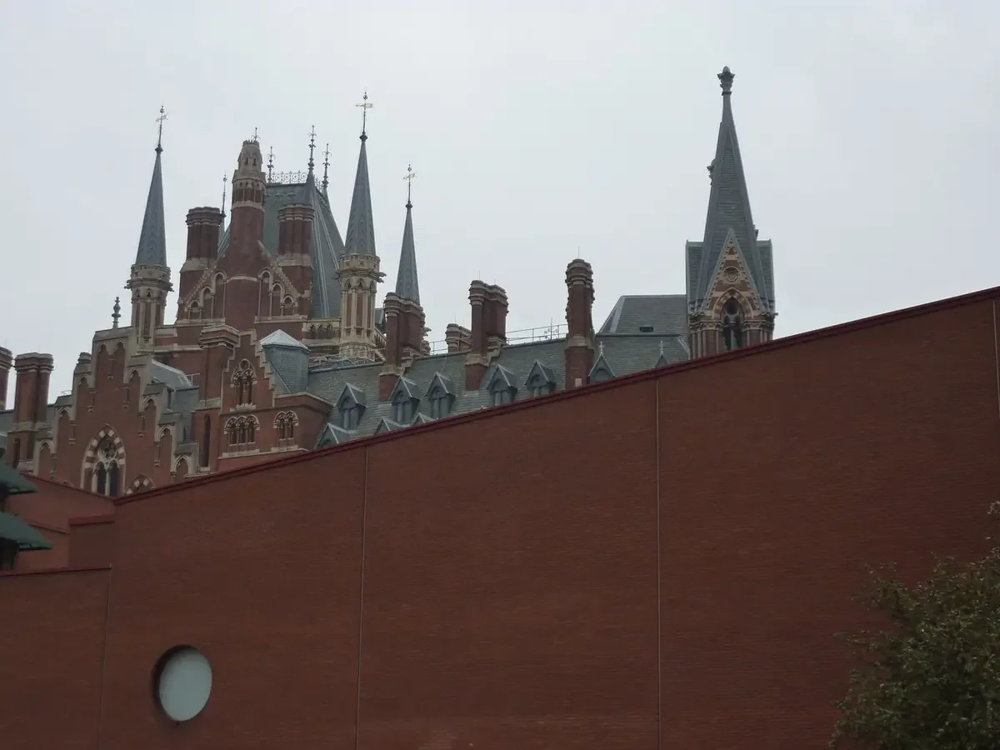
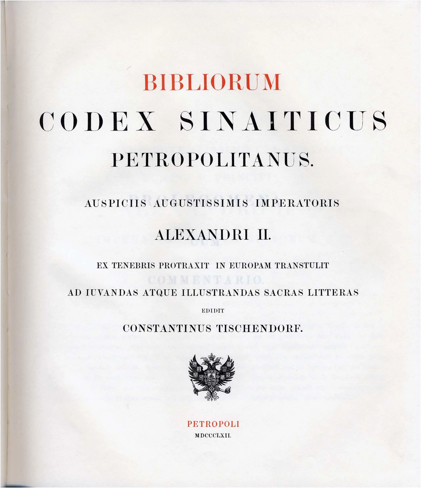
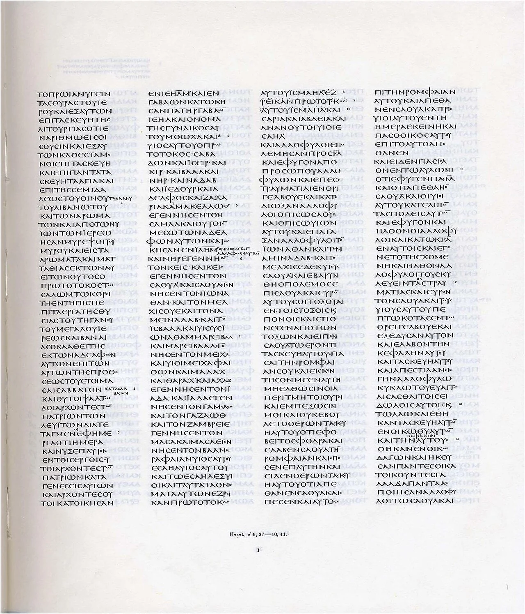
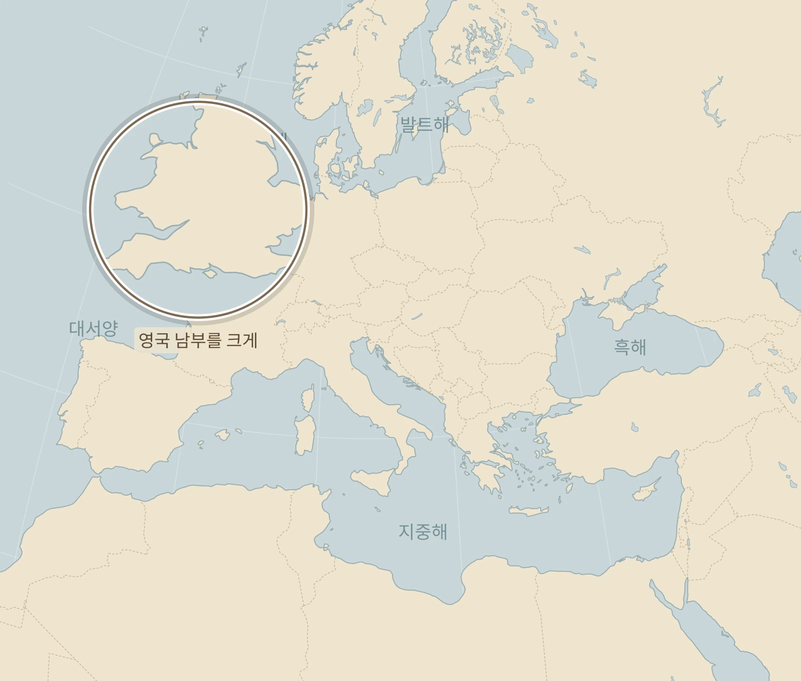
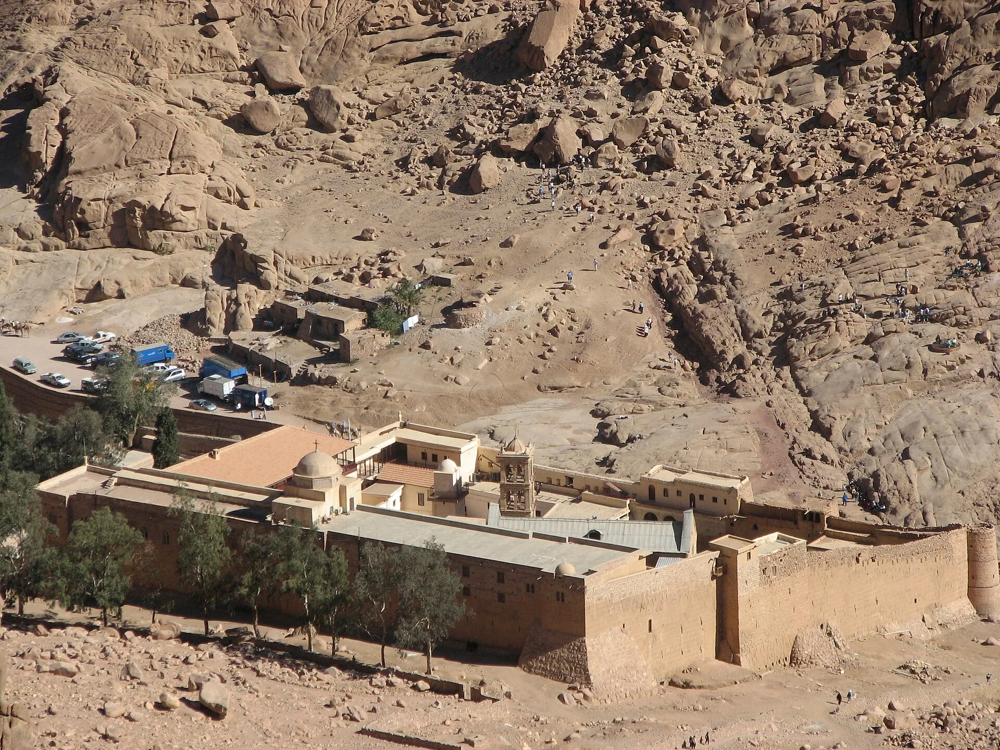

아직 펼치지 않은 카드책을 지키는 약속 · 5대영도서관 보물실한 권의 성경이 150년 넘게 네 나라로 흩어져 있어요. 이 책은 어떻게 다시 ‘한 권’이 되었을까요?흩어진 성경 조각들이 다시 모인 이야기가 있대!
1933~1945년영국 런던 · 웨일스 애버리스트위스
대영도서관 보물실
1933년 크리스마스 무렵, 4세기에 손으로 쓴 성경 347장이 러시아에서 런던 대영박물관으로 왔어요. 사람들은 줄을 서서 이 책을 보고, 책값을 보탰어요. 이 책이 지나온 길을, 전쟁 때 숨어 지낸 웨일스의 굴까지 지도 위에서 따라가 보세요.
아주 오래된 성경이 러시아에서 영국으로 왔대. 사람들이 줄 서서 구경하고, 전쟁 때는 깜깜한 굴에 넣어서 지켰대. 그 길을 따라가 볼까?
검수 전 시안이에요(기준서 1판). 장면에는 네 기관이 함께 쓴 시나이 사본 누리집의 역사, 1933년 신문 기사, 대영도서관과 웨일스 국립도서관 자료에 있는 것만 옮겼어요. 지도는 이 안내서가 그렸어요. 상상은 ‘눈 감고 상상해 보기’에만 썼어요.
시안 확인용카드 단계 미리 보기
1
페테르부르크의 책
「시나이 사본」은 4세기에 그리스어로 쓴 성경이에요. 이 책의 가장 큰 몫인 347장은 1859년 시나이의 성 카타리나 수도원을 떠나, 1862년 11월 러시아 황제에게 건네졌어요.
그해 이 책을 그대로 본떠 찍은 인쇄본이 나왔어요. 첫 장에는 ‘페테르부르크의 시나이 사본’이라는 이름 아래, 이런 라틴어 한 줄이 찍혀 있어요.

“어둠에서 끌어내어 유럽으로 옮겼다”
1862년 인쇄본 첫 장(EX TENEBRIS PROTRAXIT IN EUROPAM TRANSTULIT) · 이 안내서가 라틴어를 옮김
책을 펴낸 티셴도르프가 쓴 말이에요. 이 책이 시나이를 어떻게 떠났는지는 지금도 서로 다르게 이야기돼요. 그 이야기는 안내서의 ‘티셴도르프와 시나이 사본’ 카드에서 따로 다뤄요.
책은 1869년부터 상트페테르부르크의 황실 도서관에 있었어요. 그리고 1933년, 소련 정부가 이 책을 팔기로 했어요. 나라 살림을 다섯 해 단위로 짠 ‘두 번째 5개년 계획’에 쓸 돈을 마련하려는 것이었어요.
아주 오래된 성경이 러시아의 큰 도서관에 있었대. 그런데 나라에 돈이 필요해서 팔게 됐대.
물어보기아주 소중한 책을 판다면, 누가 사 가면 좋을까?
2
입구 홀의 줄
1933년 12월 26일, 책은 런던에 닿았어요. 이튿날 아침 대영박물관에 왔을 때, 붉은빛과 금빛 상자 안에서 갈색 종이와 솜에 싸여 있었다고 그때 신문은 적었어요.
박물관에서 필사본을 맡은 벨 박사가 두 시간 동안 진짜인지 살폈어요. 그러고는 박물관 입구 홀에 책을 놓았어요. 양피지(짐승 가죽을 얇게 다듬은 것)에 그리스어 대문자로 쓴 책이에요. 아래 쪽처럼 네 단으로 빼곡하게 썼어요.

줄이 금세 늘어섰어요. 그날 3,500명쯤이 이 책을 보고 갔고, 열에 여덟이 책 옆 상자에 돈을 넣었어요. 지폐를 넣은 사람도 있었어요.
책값은 10만 파운드였어요. 박물관이 그때까지 필사본에 낸 돈 가운데 가장 큰 돈이었어요. 정부가 9만 3천 파운드, 박물관이 7천 파운드를 먼저 냈고, 총리는 국민이 1파운드를 내면 정부도 1파운드를 내겠다고 의회에서 밝혔어요.
모금은 1935년 10월까지 5만 3,563파운드를 모아 나라에 돌려주었어요. 책값의 절반이 넘는 돈을 사람들이 보탰어요.
1933년 12월 27일, 입구 홀의 줄 끝에 섰다면 책 앞에서 무엇을 할까요?
사람들이 줄을 서서 오래된 성경을 구경했대. 책 옆 상자에 돈을 넣어서 책값을 보탰대.
물어보기너라면 줄 서서 이 책의 무엇을 제일 먼저 보고 싶어?
3
347장이 지나온 길
책이 런던에 온 지 여섯 해 만에 전쟁이 일어났어요. 대영박물관은 귀한 책과 필사본을 웨일스의 국립도서관으로 보냈어요.
지도에서 347장이 머문 네 곳을 차례로 따라가 보세요. 지도는 이 안내서가 그렸어요.
‘다음 곳으로’를 눌러 347장이 머문 곳을 차례로 따라가 보세요.

시나이상트페테르부르크런던웨일스347장이 머문 네 곳 · 영국 남부는 알아보기 쉽게 동그라미 안에 크게 그렸어요 · 이 안내서가 그린 지도 · Natural Earth(퍼블릭 도메인)의 땅과 바다 모양을 바탕으로
전쟁이 끝나고 347장은 런던으로 돌아왔어요. 대영도서관의 필사본 책임자는, 이 책이 도서관 담 밖으로 나간 것은 사실상 이때 한 번뿐이었다고 말해요.
그 굴은 웨일스 국립도서관이 전쟁에 대비해 도서관 아래 바위 속에 판 보관소예요. 전쟁 동안 대영박물관의 책과 필사본, 판화와 그림 100톤이 이곳으로 옮겨졌어요.
마그나 카르타와 스콧 선장의 남극 일기, 셰익스피어의 친필도 함께 이 굴에 있었어요. 이 도서관의 부사서였던 길다스 티벗의 자녀는, 아버지가 밤마다 경찰관, 대영박물관 직원과 함께 굴에 내려가 모든 것이 제자리인지 살폈다고 기억해요.
전쟁이 나자, 오래된 성경을 바위 속 깜깜한 굴에 넣어 지켰대. 밤마다 어른들이 내려가서 잘 있나 살폈대.
물어보기깜깜한 굴 속에서 책은 어떻게 지냈을까?
4
서늘하고 어두운 방
1997년, 대영도서관은 대영박물관 건물을 떠나 세인트판크라스역 옆의 새 건물로 옮겼어요. 347장도 이 붉은 벽돌 건물로 왔어요.
두 권 가운데 보통 한 권이 보물실에 펼쳐져요. 2009년 여름에는 두 권이 처음으로 함께 펼쳐졌어요.
보물실은 도서관의 다른 곳보다 서늘하고 어두워요. 밝은 빛과 습기에 책이 바래거나 상하지 않게 하려는 거예요.
1862년의 인쇄본은 이 책을 ‘어둠에서 끌어냈다’고 적었어요. 그 책은 전쟁 동안 굴의 어둠 속에서 지켜졌고, 지금은 지키려고 일부러 어둡게 한 방에 펼쳐져 있어요.
지금 이 책은 서늘하고 어두운 방에서 지내. 빛이 너무 밝으면 책이 바래거든.
물어보기책을 오래오래 지키려면, 또 무엇을 조심하면 좋을까?
눈 감고 상상해 보기
바위를 파서 만든 굴 안이에요. 서늘한 공기에 돌 냄새가 섞여 있어요. 나무 상자들이 줄지어 놓였고, 발소리가 낮게 울려요. 그 가운데 한 상자 안에서, 4세기에 손으로 쓴 347장이 전쟁이 끝나기를 기다려요.
눈을 감아 봐. 바위 속 깜깜한 굴이야. 서늘하고, 발소리가 울려. 상자 안에서 아주 오래된 책이 조용히 쉬고 있어.
나의 자리
사람들은 이 책을 지키려고 줄을 서서 돈을 보태고, 굴에 넣어 밤마다 살폈어요. 내가 그렇게 지키고 싶은 것은 무엇인가요?
굴 속 책을 밤마다 살핀 어른들처럼, 너는 무엇을 지켜 주고 싶어?
마음에 닿는 한 줄을 고르거나 직접 써 보세요. 한 줄을 남기면 이 자리의 도장이 찍혀요. 이 기기에만 저장돼요.
더 깊이
궁금한 칸만 펼쳐 읽어도 괜찮아요.
알고 보면
마그스 형제 서점 소련 정부와 대영박물관 사이를 런던의 고서점 마그스 형제가 이었어요. 값을 두고 오간 1933년의 편지들은 2016년 마그스 형제가 대영도서관에 기증했어요.
두 권으로 묶은 손 1935년 347장을 두 권으로 묶은 사람은 제본가 더글러스 코커럴과 아들 시드니예요. 그 전 얼마 동안 이 책은 묶이지 않은 채 있었다고 학자들은 봐요.
두 번의 나들이 이 책은 1990년과 2015년 두 번, 이웃 대영박물관 전시에 빌려 갔어요. 1990년에는 두 기관이 아직 한 건물에 있었어요. 2015년에는 신약 권이 「이집트: 파라오 뒤의 믿음」 전시에 나갔어요.
미리 한 부탁 대영박물관은 이미 1934년 1월, 전쟁이 나면 책을 맡아 줄 수 있는지 웨일스 국립도서관에 물었어요. 1938년 9월 전쟁 위기(뮌헨 위기) 무렵에는 여러 기관의 첫 짐이 벌써 도서관에 닿아 있었어요.
기록마다 다른 점

누구의 책인가 1869년 시나이의 대주교와 수도사 모임이 이 책을 러시아에 기증한다는 문서에 서명했어요. 하지만 1934년 1월 29일, 시나이의 대주교는 대영박물관에 전보를 보내 수도원이 ‘단 하나의 정당한 주인’이라고 밝혔어요. 위 사진이 시나이산 아래의 그 수도원이에요.
런던에 닿은 날 시나이 사본 누리집은 12월 26일 런던에 닿아 이튿날 박물관에 왔다고 적어요. 1933년 신문들은 특별 전령이 ‘주말에’ 러시아에서 가져왔다고 적었어요.
몇 번째 나들이 2015년 대영도서관 블로그는 신약 권을 대영박물관에 ‘처음’ 빌려준다고 적었어요. 같은 때 가디언 신문은 1990년에 이미 한 번 빌려준 적이 있다고 적었어요.
직접 가 보기
확인한 날 · 2026년 11월 18일 · 바뀌기 쉬운 정보라 정기적으로 다시 확인해요
보물실은 무료이고, 도서관 건물이 열려 있는 시간에 들어갈 수 있어요. 다른 곳보다 서늘하니 겉옷을 하나 챙기면 좋아요.
전시물은 보존 때문에 자주 바뀌어요. 이 책을 꼭 보고 싶으면 가기 전에 도서관에 확인해요.
347장이 지나온 길 금박
지도에서 마지막 곳까지 따라가면 카드에 금박이 입혀져요.
시나이에서 웨일스의 굴까지 길 따라가기
1933년 입구 홀에서 채색
둘 가운데 하나만 해도 카드가 채색돼요.
입구 홀의 줄에서, 책 앞에서 할 일 고르기
아이와 함께 ‘영화처럼 보기’를 끝까지 보기
근거 보기 (16)
- 시나이 사본 누리집: 역사 — 1859년 347장, 1862년 11월 10일 황제에게 건넴과 인쇄본(팩시밀리), 1869년 황실 도서관과 기증 문서, 1933년 소련 정부·마그스 형제·두 번째 5개년 계획·10만 파운드·재무부 9만 3천·박물관 7천, 12월 26일 런던·이튿날 박물관, 모금 4만 6,500파운드(1934년 5월)·5만 3,563파운드(1935년 10월), 1934년 1월 29일 시나이 대주교의 전보
- Hokitika Guardian, 1933년 12월 22일(Papers Past) — 10만 파운드, 소련이 처음 부른 20만 파운드, 총리의 ‘1파운드에 1파운드’, 박물관이 필사본에 낸 가장 큰 돈(부관장 플라워)
- Hokitika Guardian, 1933년 12월 29일(Papers Past) — 특별 전령·주말, 벨 박사의 두 시간, 입구 홀, 금세 선 줄, 3,500명, 열에 여덟이 상자에 돈(지폐도), 보존 상태에 놀람, 양피지에 대문자·한 쪽 네 단
- Rotorua Morning Post, 1933년 12월 29일(Papers Past) — 붉은빛과 금빛 상자, 갈색 종이와 솜, 벨 박사, 입구 홀, 3,500명, 상자의 돈, 또렷한 글씨
- 시나이 사본 누리집: 코디콜로지(플라비오 마르초) — 1935년 더글러스·시드니 코커럴의 제본, 신약·구약 두 권, 1933년 12월 27일 박물관에 옴, 그 전에는 묶이지 않은 채
- 대영도서관 필사본 블로그(2015년 10월 29일) — 4세기 중엽 그리스어 성경, 두 권(Add MS 43725)·보통 한 권 전시, 신약 권을 대영박물관 「이집트: 파라오 뒤의 믿음」에 빌려줌(2015.10.29~2016.2.7)
- 버밍엄 대학교(2009년 7월 6일) — 대영도서관의 두 권이 처음으로 함께 전시
- 가디언(2015년 8월 27일) — 1990년 한 번 대영박물관에 빌려줌(한 건물이던 때), 매켄드릭: 사실상 도서관 담 밖으로 나간 것은 전쟁 때 애버리스트위스의 굴 한 번, 책값의 절반 넘게 모금(newssniffer 사본으로 확인)
- 윌리엄 데이비스, 「웨일스 국립도서관으로의 전시 피란」(웨일스 국립도서관 저널) — 1934년 1월 19일 대영박물관의 부탁, 1938년 뮌헨 위기 전 첫 짐, 책·필사본·판화와 그림
- Geograph: 이언 캐퍼, 「웨일스 국립도서관 굴 입구」(2013) — 도서관이 바위 속에 판 폭탄 대피 보관소, 전쟁 동안 대영박물관의 책·필사본·판화와 그림 100톤
- History News Network(BBC 2009년 1월 기사 요약) — 굴에 있던 것(마그나 카르타·스콧의 남극 일기·셰익스피어 친필), 부사서 길다스 티벗의 자녀 델윈의 기억
- 대영도서관 연례 보고(유럽 국립도서관장 회의, 1997~98) — 1997년 세인트판크라스 새 건물로 옮김
- 대영도서관 보물실 안내 — 무료, 다른 곳보다 서늘하고 어두운 방(빛과 습기로부터 보호), 보존 때문에 자주 바뀌는 전시 · 2026-11-18 확인
- 대영도서관 기록 보관소: 「시나이 사본 구입에 관한 편지」 — 마그스 형제와 케니언(대영박물관)·일린(소련 고서 담당)의 값 흥정, 2016년 1월 마그스 형제 기증
- 위키미디어 공용: 1862년 인쇄본 첫 장(라틴어 표제를 그림에서 읽음)
- Natural Earth — 지도 바탕의 땅·바다·호수·나라 경계(퍼블릭 도메인)
그림·사진·소리 출처
‘처음 만나는 기독교 문화’의 깊은 카드예요. 실제 인물의 사진은 쓰지 않았어요. 카드 단계와 남긴 글은 이 기기에만 저장돼요.